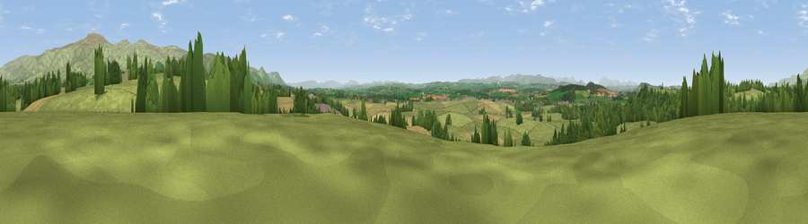

Viewpoint near Newbiggin
#13128 in England · top 54% of its area beats it · near NewbigginWhere it is
The exact computed spot (NY 63275 28225). Click the marker for map links.
The view, rendered

A 360° render of this exact spot computed from the terrain model, tree cover and land cover — summer colours, afternoon light, calibrated against photographs of famous viewpoints. Real trees, hedges and buildings will differ in detail.
The panorama
Grey silhouette: terrain skyline in each direction (720 bearings, Earth curvature and refraction included). Dashed green: skyline with trees (+15 m) and buildings (+8 m) as obstacles. Blue strip: how far the ground is visible on each bearing.
Where the view opens
Wedge length = distance to the farthest visible ground on that bearing (vegetation-aware). Rings at 10, 25 and 50 km.
What fills the view
75% grassland · 14% cropland · 11% woodland ·
Angular shares of the visible panorama (visual magnitude), not map area. Landscape diversity 0.33 (0–1 Shannon).
Key numbers
More beautiful places nearby
The staircase of upgrades: each row has a higher view potential than everything closer. Driving times are estimates from straight-line distance, calibrated against real road routing — check an actual route before setting out.
| Place | Direction | Drive | Score |
|---|---|---|---|
| Viewpoint near Newbiggin | WNW · 1 km | ~4 min | 62.7 |
| Viewpoint near Cliburn | WSW · 5 km | ~11 min | 69.0 |
| Knock Pike | E · 5 km | ~11 min | 71.3 |
| Viewpoint near Blencarn | NE · 6 km | ~13 min | 76.2 |
| Cross Fell | NE · 8 km | ~16 min | 78.7 |
| Viewpoint near Plumpton | WNW · 14 km | ~25 min | 78.9 |
| Viewpoint near Watermillock | WSW · 19 km | ~32 min | 82.6 |
| Viewpoint near Watermillock | WSW · 19 km | ~32 min | 83.5 |
54.64778, -2.57064 · source: screening · position refined by local search. Computed location — check access rights before visiting.